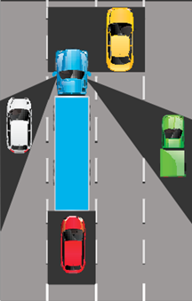
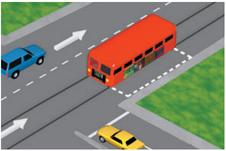
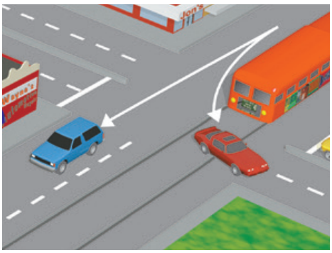
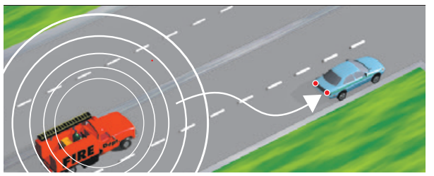
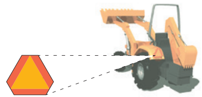
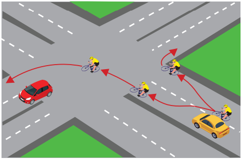
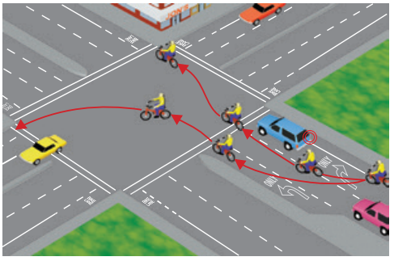
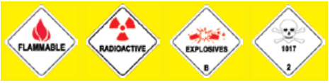

Sharing the Road
Drivers need to share the road with other vehicles, pedestrians, bicyclists, road workers, and large vehicles.
Blind Spots (the No Zone)
Large vehicle and truck drivers have a better view in front of them and bigger mirrors. But they also have large blind spots, also called No Zones. In these areas, your vehicle can disappear from a large vehicle or truck driver’s view. If you cannot see the truck’s side mirrors, the truck driver cannot see you.

The shaded areas in this image are the truck driver’s blind spots.
Braking
Large vehicles and commercial trucks take longer to stop than passenger vehicles traveling at the same speed. When traveling, they create extra space in front of their vehicle to use if they need to stop suddenly. The average passenger vehicle traveling at 55 mph can stop within 300 feet. A large vehicle traveling at the same speed can take up to 400 feet to stop. The heavier the vehicle and the faster it is moving, the longer it takes to safely stop, so a loaded truck will take longer to stop than an empty truck. Do not move in front of a large vehicle and suddenly slow down or stop. The large vehicle will not be able to stop fast enough to avoid crashing into you.
Turning
When a vehicle turns, the rear wheels follow a shorter path than the front wheels. The longer the vehicle, the greater the difference in the length of the turning path. This is why large vehicles and truck drivers must often swing wide to complete a turn. When you follow a large vehicle, look at its turn signals before you start to pass. It may appear to be turning one direction but instead is swinging wide in the opposite direction in order to turn.
Maneuvering
Large vehicles and trucks are not as easy to maneuver as passenger vehicles. On a divided highway with four or more traffic lanes in one direction, they may be driven in the two lanes farthest to the right. When driving near large vehicles and trucks, do not:
- Change lanes directly in front of them to reach an exit or turn.
- Drive next to them longer than you need to. Always pass a large vehicle on the left side. After you pass the large vehicle or truck, move ahead of it. Driving alongside a large vehicle makes it hard for the driver to avoid dangers in the road.
- Follow too closely. Tailgating decreases a vehicle’s safety distance.
- Underestimate their size and speed as they often appear to be traveling slower.
Buses, Streetcars, Trolleys
Safety zones are spaces set aside for pedestrians waiting for buses, streetcars, and trolleys. Safety zones are marked by raised buttons or markers on a road. Do not drive through a safety zone under any condition.
When a bus, streetcar, or trolley is stopped at a safety zone or traffic light, you may pass at no more than 10 mph.

Safe Zones are marked by dotted white lines.
Do not overtake and pass a light rail vehicle or streetcar on the left side, whether it is moving or standing, unless:
- When the tracks are so close to the right side that the passenger vehicle cannot pass on the right.
- You are on a one-way street.
- A traffic officer directs you to pass on the left.
Light Rail Vehicles
On public roads, light rail vehicles have the same rights and responsibilities as other vehicles. To safely share the road with light rail vehicles:
- Be aware of where they operate. Buildings, trees, and other items can cause blind spots for the operator.
- Never turn in front of an approaching light rail vehicle.
- Maintain a safe distance.
- Check for approaching light rail vehicles before you turn across the tracks. Complete your turn only when the traffic light indicates you may proceed. Be aware they can interrupt traffic lights.

Do not turn in front of light rail vehicles.
Motorcycles
Motorcyclists have the same rights and responsibilities as other vehicle drivers. To safely share the road with motorcyclists:
- Check for motorcycles and use your mirrors when you change lanes or enter a road. Motorcycles are smaller in size and harder to see so they easily disappear in vehicle blind spots.
- Allow a safe three-second following distance. This space will help you avoid hitting a motorcyclist if they brake suddenly or fall.
- Whenever possible, give a motorcycle the full lane. It is legal to share lanes with motorcycles, this is known as lane splitting.
- Never try to pass a motorcycle in the same lane as you.
- Check for motorcyclists before you open your door next to traffic.
- When possible, move to one side of your lane to give motorcyclists more room to pass.
Road conditions can cause motorcyclists to suddenly change speed or direction.
Emergency Vehicles
Give the right-of-way to any law enforcement vehicle, fire engine, ambulance, or other emergency vehicle using a siren and red lights. Failure to pull over may result in a ticket. Drive to the right edge of the road and stop until the emergency vehicle(s) have passed.

Yield to emergency vehicles.
When approaching a stationary emergency vehicle with flashing emergency signal lights (hazard lights), move over and slow down.
If you are in an intersection when you see an emergency vehicle, continue through the intersection. Drive to the right as soon as it is safe and stop.
Obey any direction, order, or signal given by a law enforcement officer, or firefighter. Follow their orders even if they conflict with existing signs, signals, or laws.
It is against the law to follow within 300 feet of any fire engine, law enforcement vehicle, ambulance, or other emergency vehicle when their siren or flashing lights are on.
You can be arrested if you drive to the scene of a fire, collision, or other disaster. When you do this, you are getting in the way of firefighters, ambulance crews, or other rescue and emergency personnel.
Slow-moving Vehicles
They can take longer to get up to speed when entering traffic. Large trucks, bicycles, and some cars lose speed on long or steep hills. Some slow-moving vehicles have an orange and red triangle on their back, such as road maintenance vehicles, which usually travel at 25 mph or less.

An example of a slow-moving vehicle.
Other types of slow-moving motorized vehicles that may operate on public roads include:
- Scooters
- Neighborhood electric vehicles
- Golf carts
Adjust your speed to share the road with these vehicles.
Neighborhood Electric Vehicles (NEV) and Low-speed Vehicles (LSV)
Watch for slow-moving vehicles when you see these signs or markings:
- NEV USE ONLY
- NEV ROUTE
NEVs and LSVs reach a maximum speed of 25 mph. They are restricted from roads where the speed limit is greater than 35 mph.
Animal-drawn Vehicles
Horse-drawn vehicles and people riding horses or other animals are allowed to share the road with motor vehicles. It is against the law to intentionally scare horses or livestock.
Near Animals
If you see a sign with a picture of an animal, watch for animals on or near the road. If you see animals or livestock near the road, slow down or stop and proceed when it is safe. Be sure to follow directions from the person in charge of the animals.
Bicycles
Bicyclists have the same rights and responsibilities as other drivers.
Bicyclists may:
- Legally ride on certain sections of freeways where there is no alternate route and bicycling is not forbidden by law.
- Move left to avoid hazards. These may include parked or moving vehicles, bicycles, animals, or trash.
- Choose to ride near the left curb or edge of a one-way street.
- Choose to use crosswalks by stopping and crossing as a pedestrian.
Bicyclist Responsibilities
As a bicyclist, you must:
- Obey all traffic signs, signal lights, and basic right-of-way rules.
- Ride in the same direction as traffic.
- Always look over your shoulder to make sure the lane is clear before turning or changing lanes.
- Yield to pedestrians.
- Wear a helmet (if under 18 years old).
- Stay visible (for example, never weave between parked vehicles).
- Ride as near to the right curb or edge of the roadway as possible.
- Not ride on the sidewalk (unless allowed by the city).
- Make left and right turns in the same way drivers do, using hand signals and turn lanes.
- Use a bike lane, whenever possible, or use a through traffic lane.
- Have fully functional brakes.

Examples of turns for bicyclist.

Intersection with special lanes for bicyclists.
Bicycling at Night
When it is dark out, bicyclists should avoid wearing dark clothing. Your bicycle must have the following equipment:
- A front lamp with a white light visible from 300 feet.
- A built-in rear red reflector, solid red light, or flashing red light. This must be visible from 500 feet.
- A white or yellow reflector on each pedal, the bicyclist’s shoes, or their ankles. These must be visible from 200 feet.
- A white or yellow reflector on the front wheel, a white or red reflector on the rear wheel, or reflectorized tires.
Bicycling in Travel Lanes
Bicyclists traveling slower than the flow of traffic must ride as close as possible to the right curb or edge of the road, unless:
- Passing a vehicle or another bicycle in the same direction.
- Preparing to make a left turn.
- Avoiding a hazard or road condition.
- A lane is too narrow for a bicycle and a vehicle to safely travel side-by-side in the lane.
- Approaching a right turn.
- On a one-way road with two or more lanes. In this case, a bicyclist may ride near the left curb or edge of the road.
Drivers should follow at a safe distance. When it is safe, the bicyclist should move to a position that allows vehicles to pass.
Passing a Bicyclist
To safely pass a bicyclist that is in the travel lane, you may need to change to another lane. In this case, pass safely, then return to your original lane. Leave space between your vehicle and the bicyclist.

Right

Wrong
When you cannot change lanes to pass a bicyclist, allow at least three feet between your vehicle and the bicyclist. If you cannot give three feet of space, do not pass the cyclist until three feet of clearance can be given. This will help you avoid putting the bicyclist in danger. Remember to:
- Give bicyclists enough space so they are not forced into parked vehicles or open vehicle doors.
- Only merge toward the curb or into the bike lane when it is safe.
- Merge safely behind a bicyclist when preparing to make a turn.
- Enter a bike lane no more than 200 feet before starting a turn.
- Check for bicyclists when changing lanes or entering traffic. They may be hidden in a vehicle’s blind spots.
- Be careful when approaching or passing a bicyclist on a two-lane road.
Road Workers and Work Zones
You will see warning signs and message boards when there are workers, slow-moving equipment, and closed lanes ahead.
Go through the work zone carefully by:
- Slowing down.
- Allowing extra space between vehicles.
- Expecting sudden slowing or stopping.
- Watching for drivers changing lanes.
- Avoiding distractions.
Cones, drums, or other barriers will guide you through the work zone. Prepare to slow down or stop for highway equipment. Merge as soon as it is safe without crossing the cones or drums. Watch for bicycles if lanes are narrow or the shoulder is closed. Obey special signs or instructions from workers such as flaggers.
Fines and Double Fine Zones
Fines for traffic violations in a work zone can be $1,000 or more. Anyone convicted of assaulting a highway worker faces fines of up to $2,000 and imprisonment for up to one year.
Certain roads are chosen as Safety Enhanced-Double Fine Zones. This is due to increased collision-related injuries and fatalities. Fines are doubled in these zones.
Fines are also doubled in highway construction or maintenance zones when workers are present.
Move Over and Slow Down
Drivers must move over and slow down for emergency and road work vehicles. These include:
- Stationary emergency vehicles or tow trucks displaying flashing amber warning lights.
- Stopped road work vehicles displaying emergency flashing or amber warning lights.
Vehicles with Hazardous Loads
A diamond-shaped sign on a truck means that the truck’s load may be dangerous (gas, explosives, etc.). Vehicles with these signs must stop before crossing railroad tracks.

Examples of hazardous load placards.
Heavy Traffic or Bad Weather
You must drive slower when there is heavy traffic or bad weather. At the same time, you should not block normal and reasonable traffic flow by driving too slowly. If you drive faster or slower than the speed limit, you may be cited. When another driver is close behind you and wishes to drive faster, move to the right. If you choose to drive slower than other traffic, drive in the right lane. Refer to Choosing a Lane in Section 6 for more information.
Towing
You must drive in the far-right lane or a lane marked for slower vehicles when you:
- Tow a vehicle or trailer.
- Drive a truck with three or more axles.
If no lanes are marked and there are four or more lanes in your direction, you may only drive in the two lanes closest to the right edge of the road.
Around Children

All vehicles must stop for school buses.
The speed limit is 25 mph within 500 feet of a school while children are outside or crossing the street. Some school zones may have speed limits as low as 15 mph. When near schools, look for:
- Bicyclists and pedestrians.
- School safety patrols or crossing guards. Be sure to obey their directions at all times.
-
Stopped school buses and children crossing the street.
- Some school buses flash yellow lights when preparing to stop to let children off the bus. The yellow flashing lights warn you to slow down and prepare to stop.
- When the bus flashes red lights (located at the top, front, and back of the bus), you must stop from either direction until the children are safely across the street and the lights stop flashing. Remain stopped while the red lights are flashing. If you fail to stop, you may be fined up to $1,000 and your driving privilege could be suspended for one year.
- If the school bus is on the other side of a divided or multilane highway (two or more lanes in each direction), you do not need to stop.
Blind Intersections
An intersection is considered blind if it has no stop signs at any corner.
If your view is blocked, move slowly forward until you can see. The speed limit for a blind intersection is 15 mph.
Alleys
An alley is any road no wider than 25 feet that is used to access the rear or side entrances of buildings or properties. You may drive on or cross a sidewalk to enter or exit a driveway or alley. The speed limit in an alley is 15 mph.
Near Railroad or Light Rail Tracks
The speed limit is 15 mph within 100 feet of a railroad crossing and you cannot see the tracks for 400 feet in both directions. You may drive faster than 15 mph if the crossing is controlled by gates, a warning signal, or a flagman. At railroad or train crossings:
- Flashing red warning lights indicate you must stop and wait. Do not proceed over the railroad tracks until the red lights stop flashing, even if the gate rises.
- When the crossing devices or a person warns you a train is coming, stop at least 15 feet from the nearest track.
- Do not go under lowering gates or around lowered gates. If the gates are lowered and you do not see a train approaching, call the posted railroad emergency toll-free number or 911.
- Stop, look, and listen. If you see a train coming or hear a horn or bell, do not cross. Many crossings have multiple tracks. Look in both directions and only cross when it is safe.
- Expect a train on any track, at any time, traveling in either direction.
- Never stop on the railroad tracks. Wait and do not begin proceeding if you do not have enough room to completely cross the tracks. If you are on the tracks, you risk injury or death.
- Watch for vehicles that must stop before they cross train tracks. These vehicles include buses, school buses, and vehicles marked with a hazardous materials placard.
Business or Residential Districts
The speed limit is 25 mph, unless otherwise posted.